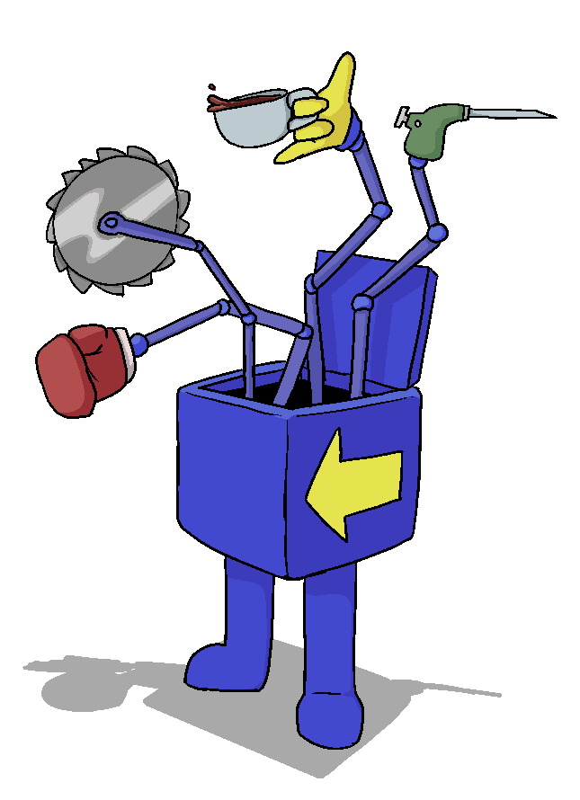

Arrow Box
Arrow Box | |
|---|---|
|  | |
| Full Name | Arrow Box |
| Pronouns | He/Him |
| Species | Arrow Box |
| Age | <???> |
| Height | 91cm / 3ft |
| Occupation | Arrow Box |
| Relationships | Six Foot Tall Reference Guy - Partner |
| Sides | 6 |
| Sides | 6 |
Backstory
Arrow Box came into being a very, very long time ago. Not much is known about him. Throughout history he has appeared when most needed, lending aid to those who could otherwise not help themselves. Other times he'll just be there to hold up a ladder for you. The only certainties about his existence is that he can appear at any time, in any place, always to help. The extent of his power remains unknown.
Character
Arrow Box has an almost doglike demeanor, extremely friendly towards most people and always, always willing to help. He's able to open panels on his body to reveal a countless number of hidden limbs and tools to fit the situation. He is mute, though is able to communicate via gestures, writing, and sometimes by displaying text or pictures in place of his trademark yellow arrow.
Trivia
- Arrow Box started as a placeholder sprite for gamedev that people joked as being a new OC.
- Arrow Box can talk, but chooses not to.